Plot Types
CDFViewer ships eleven plot types, selected with the p command or the Plot Settings menu. Which types are offered depends on how many plot axes are assigned. A line plot needs one axis, a heatmap two, and volume rendering three. The plots command lists all types.
CDFViewer> plots
┌ Info: Available plot types:
└ Select, heatmap, contour, contourf, surface, wireframe, quiver, streamplot, line, scatter, volume, contour3d| Plot type | Axes | Colorbar | Description |
|---|---|---|---|
line | 1 | no | line plot |
scatter | 1 | no | scatter plot |
heatmap | 2 | yes | colored image of the field |
contour | 2 | no | contour lines |
contourf | 2 | yes | filled contours |
quiver | 2 | yes | arrows of a two-component field |
streamplot | 2 | yes | streamlines of a two-component field |
surface | 2 | yes | 3D surface, height = value |
wireframe | 2 | no | 3D surface as a wire mesh |
volume | 3 | yes | volume rendering |
contour3d | 3 | yes | 3D isosurfaces |
heatmap, contour, contourf, quiver, and streamplot can also be drawn on geographic map projections (see Customizing Plots).
Line and scatter (1D)
With a single axis assigned, the variable is drawn against that coordinate. The first example draws the humidity at one grid point over time.
CDFViewer> v humidity
[ Info: Selected: humidity
CDFViewer> x time
[ Info: Selected: time
CDFViewer> p line
[ Info: Selected: line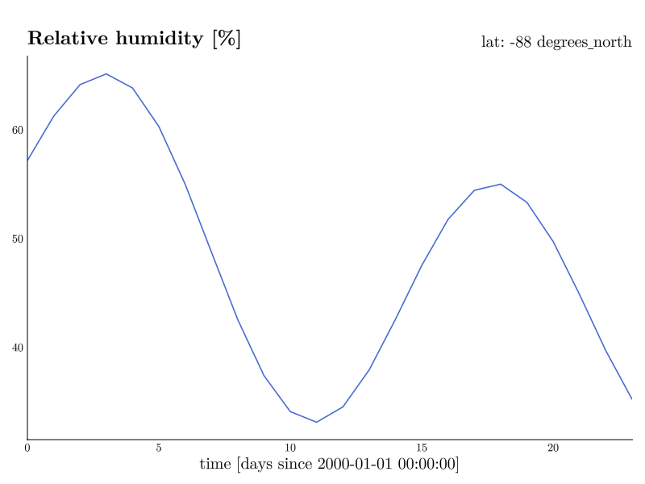
scatter shows the same data as individual points.
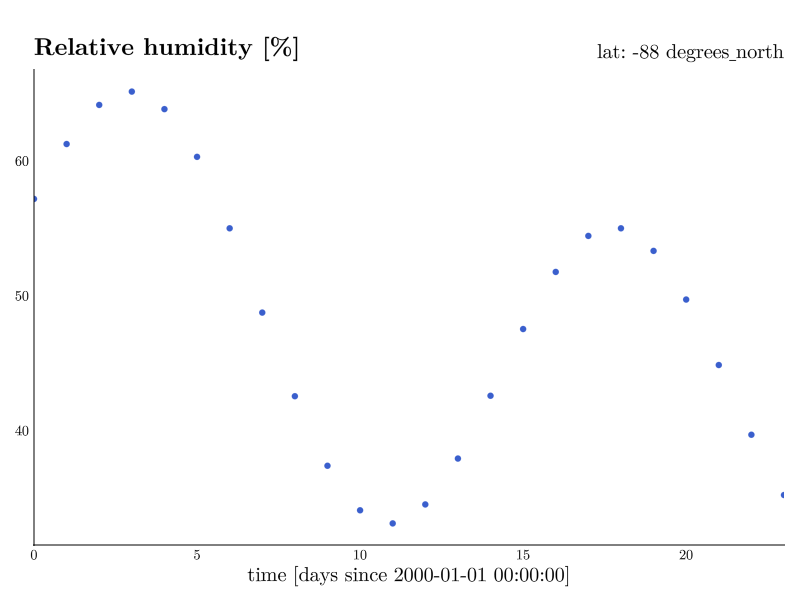
Heatmap, contour, and contourf (2D)
Two assigned axes give you the classic map-style views. The default 2D type is heatmap.
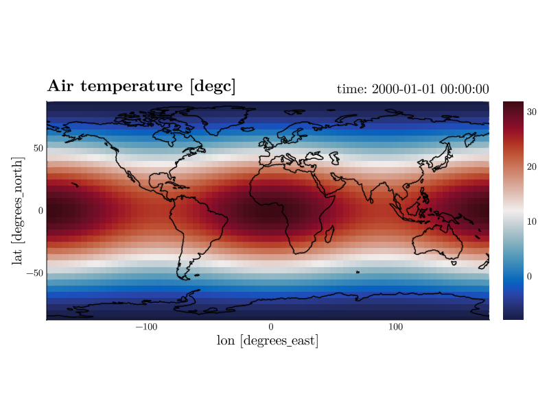
contour draws contour lines, contourf filled contour bands.
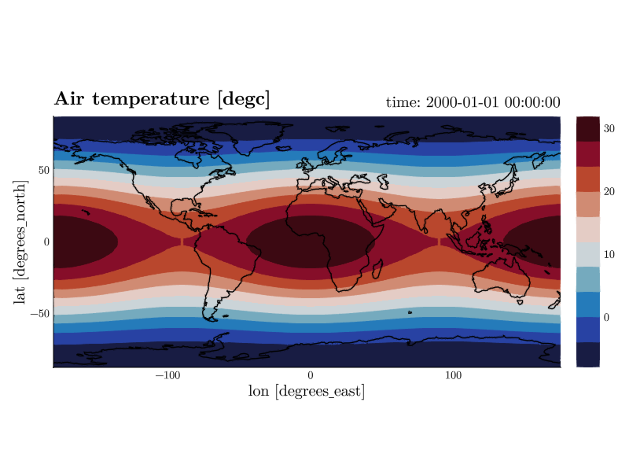
Quiver and streamplot (vector fields)
Wind and current are stored as two variables, one component each. quiver and streamplot draw both at once, so they need two variables instead of one. Name them in a single comma-separated token.

Selecting one of these types with only one variable set looks for the partner by name: u finds v, uas finds vas, U10 finds V10. The guess counts only when the dataset really holds that variable over the same dimensions, so p quiver after v u usually needs no second name at all. The colors are the magnitude of the vector, which is why both types carry a colorbar and why they use a sequential colormap rather than the diverging default.
The labels follow. The title names both components, with the unit they share written once (Eastward wind / Northward wind [m s-1]), while cbarlabel="auto" names what the colors actually stand for (|(u, v)| [m s-1]). Components with different units get no unit at all rather than a misleading one, and an explicit title= or cbarlabel= overrides either.
How many arrows are drawn is a target count per axis, not a grid stride, so it stays put when the grid underneath changes.
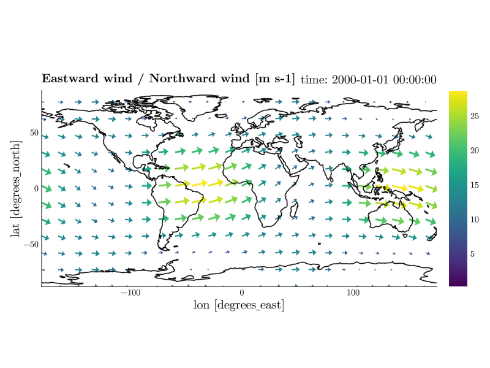
| Keyword | Default | Effect |
|---|---|---|
arrows=(24, 16) | (24, 16) | how many arrows to aim for along x and y |
every=4 | (none) | draw every n-th grid point instead, exactly |
minspeed=9 | (none) | leave everything slower than this undrawn |
streamplot follows the field instead of sampling it, so arrows does not apply to it. Its lines are short on purpose: each one runs 10% of the shorter side of the domain in either direction from where it starts. A long line ends where it runs into a line drawn before it, so a small change in the data reshuffles which lines exist at all and an animation of them boils. A short line ends at its own length instead and stays put from frame to frame.
How many are drawn is Makie's own density, the fraction of the seeding grid that gets filled. It defaults to 0.5, so there is room to go both ways; gridsize, stepsize, maxsteps and arrow_size are available as usual, and maxsteps=500 gives you the long lines back.
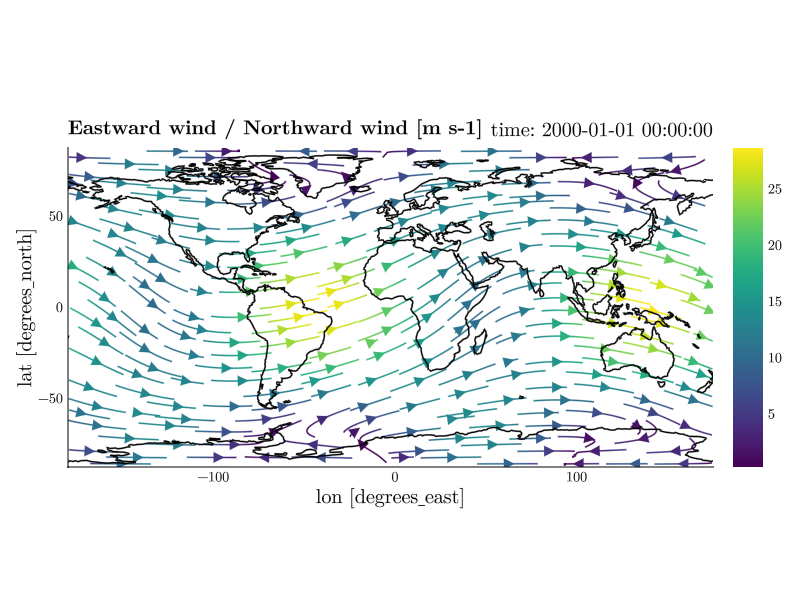
Leaving out the slow parts
Streamlines drawn where the field barely moves are noise: they wander, and they change from frame to frame. minspeed leaves them out.
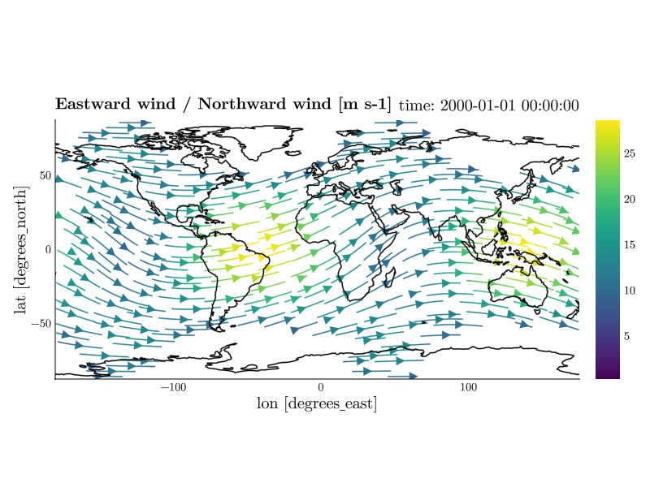
The value is a speed in the data's own units, and the colorbar is already showing you that range – read a value off it and type it. It is deliberately not a fraction of the fastest wind in the frame: that would be recomputed on every frame, so the blank region itself would move as the data moves. An absolute cutoff holds still for a whole playback, the same way a pinned color range does.
minspeed works on quiver as well, where it drops the arrows rather than the lines, and del minspeed draws everything again.
One color for the whole field
The colors are the magnitude of the vector by default. color= paints the whole field in a single color instead, which is what you want when the arrows sit over another field and the colors belong to that one.
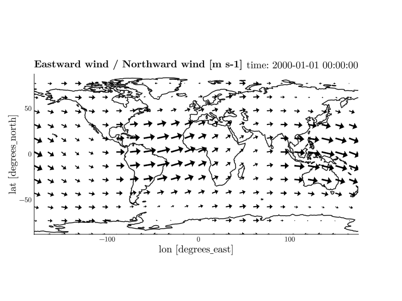
The bar would otherwise go on showing a magnitude the arrows no longer carry, so the two go together: color=:black, cbar=false. Any color Makie accepts works, (:black, 0.6) included, and del color brings the magnitude colors back.
On a map
On a map both types are drawn in longitude/latitude and projected afterwards, which needs two corrections you do not have to ask for. Arrows are stretched by 1/cos(latitude) so a steady eastward wind keeps its drawn length toward the poles, and on a global domain an arrow whose tip would cross the ±180° seam is dropped rather than smeared across the map. A regional cut-out has no seam, so nothing is dropped there.
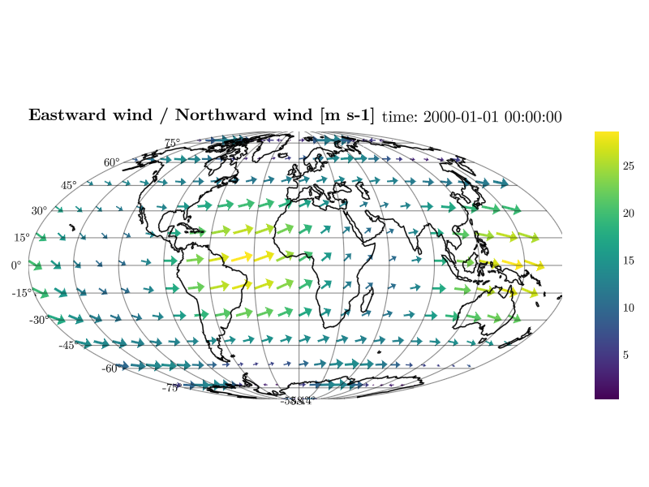
Surface and wireframe (2D data in 3D)
CDFViewer is just as handy for idealized, non-geographic setups, so the remaining examples use a different dataset. wave.nc contains a circular surface wave expanding in a 2 km × 2 km box. surface and wireframe take two axes and render the field as a height surface in a 3D axis that you can rotate with the mouse.
CDFViewer> v eta
[ Info: Selected: eta
CDFViewer> x x
[ Info: Selected: x
CDFViewer> y y
[ Info: Selected: y
CDFViewer> isel time 25
[ Info: → time: 12 s
CDFViewer> p surface
[ Info: Selected: surface
CDFViewer> limits=(0, 2000, 0, 2000, -6, 6)
┌ Info: Current plot settings:
└ limits => (0, 2000, 0, 2000, -6, 6)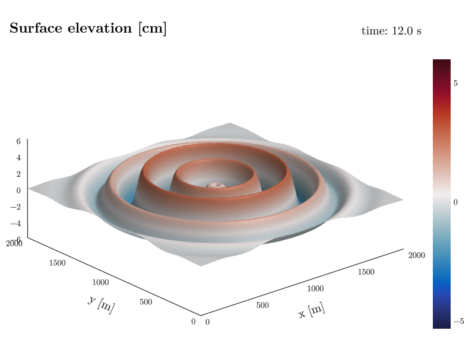
wireframe shows the same surface as a wire mesh, most useful for coarser grids where the individual cells are of interest.
Volume and contour3d (3D)
With three axes assigned, the field is rendered in 3D. contour3d draws isosurfaces, here the concentric pressure rings of the same dataset.
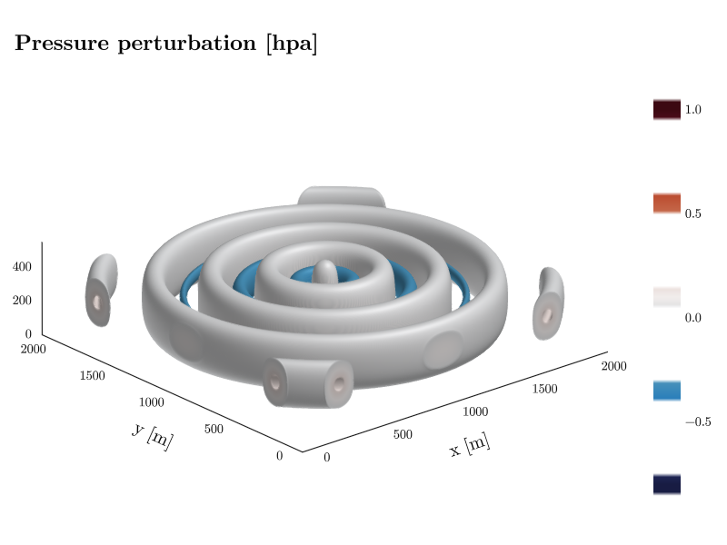
volume renders the full 3D field as a translucent volume instead, best suited for smooth, space-filling fields.